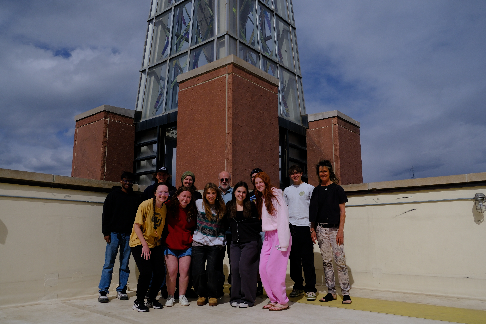
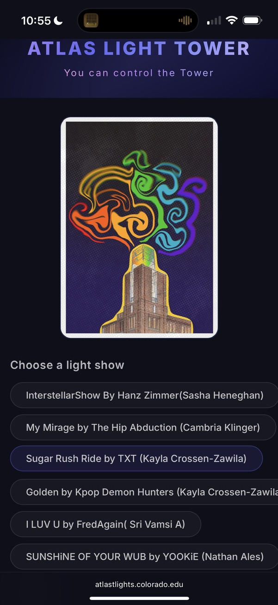
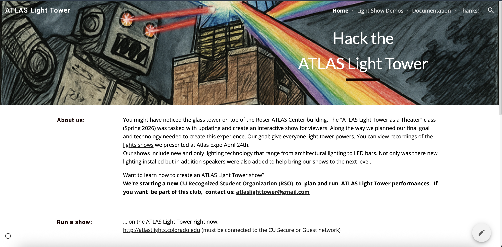

In the spring of 2026, I joined a class called: ATLAS Light Tower as a Theater. This class was tasked on taking an under utilized architectual lighting space and updating and creating an interactive show for viewers. Along the way we planned our final goal and technology needed to create this experience. Our goal: give everyone light tower powers.
For this project, I given the role of Project Manager by my professor. In this role, I coordinated with faculty to secure funding for new equipment including outdoor speakers to upgrade the existing space. The team I led contained members with very different educational backgrounds, from masters to undergrad students that inlcuded aerospace engineers, computer scientist and creative technologist. I organized and created documentation, deadlines, and subteams. As a member of the team, I also created my own lighting shows and helped install new equipment including lights, speakers, a projector and a laser.

